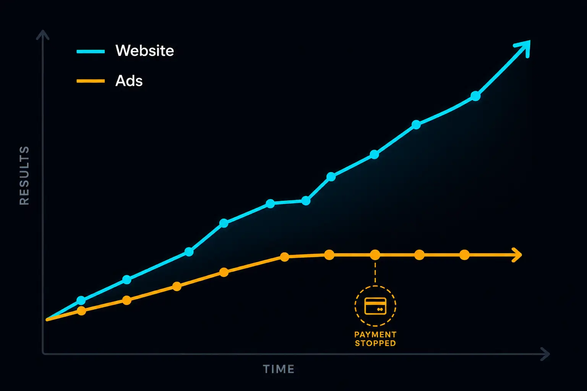

Every month, Malaysian SME owners spend money boosting Facebook posts or running Google ads without a website to send people to. Sometimes they send traffic to a Facebook page. Sometimes they send it to a WhatsApp link. Sometimes they run the ad and hope someone calls.
It rarely works well. Here is why — and what the wasted spend actually costs.
What Ads Are Designed to Do
Paid advertising has one job: bring a stranger from where they are (scrolling Facebook, searching Google) to where you want them (your business). The ad is the vehicle. Your website is the destination.
If there is no destination, the vehicle has nowhere to go.
When someone clicks an ad and lands on your Facebook page, they land in an environment designed for Facebook — not for converting interest into enquiries. The page shows your last post (which may be months old), a wall of comments, Facebook's own navigation, and a dozen other distractions. The visitor has no clear path to contact you, no sense of your services, and no reason to stay.
When someone clicks an ad and lands on your website, they land on a page you control entirely — one designed to answer their question, show your work, and point them toward a WhatsApp message or phone call.
The difference in conversion rate between these two scenarios is not marginal. Industry benchmarks for Facebook ads landing on a proper website sit at 2 to 5% conversion (click to enquiry). Ads landing on Facebook pages typically convert at 0.5 to 1% — and that is being generous.
The Real Cost of Sending Ad Traffic Nowhere
Let us work through a concrete example.
A Malaysian HVAC contractor spends RM 500 per month boosting Facebook posts. The boost drives traffic to the Facebook page.
At RM 0.50 cost per click (a reasonable estimate for a local service business in Malaysia), that is 1,000 clicks per month. At a 0.8% conversion rate — which is typical for Facebook-page destinations — that produces 8 enquiries. At a 30% close rate, that is 2 to 3 jobs.
Now the same RM 500, same 1,000 clicks, but directed to a proper landing page with a clear services section, photos, and a WhatsApp button. At a 3% conversion rate, that is 30 enquiries. At 30% close, that is 9 jobs.
Same spend. The difference between 2 jobs and 9 jobs is the destination, not the ad.
If the average job value is RM 300 to RM 500, the contractor running ads to a Facebook page is losing RM 2,100 to RM 3,500 per month in potential revenue — not because the ads are bad, but because there is nowhere credible to land.
Why Facebook Pages Do Not Work as Ad Destinations
This is not a criticism of Facebook pages. They are useful tools for staying visible to existing followers. They are poor ad landing pages for three specific reasons.
You cannot control the layout. A landing page can be structured to answer the visitor's exact question in 5 seconds — services, price range, location, contact. A Facebook page is a feed. The visitor has to hunt for the information that should be immediate.
Trust signals are harder to establish. A website can show a portfolio, client logos, a professional photo, a clear value proposition, and a single call to action. A Facebook page shows whatever you posted last, which may be a forwarded meme or a notice that you were closed for Hari Raya.
You cannot track conversions properly. With a website, you can install Google Analytics, Meta Pixel, or even a simple UTM link to understand exactly how many people clicked your ad, viewed your page, and messaged you. Facebook-to-Facebook tracking is circular and incomplete.
What About Sending Ads to WhatsApp?
Click-to-WhatsApp ads are popular in Malaysia, and they have their place — but they work best as a retargeting tool, not a cold acquisition tool.
When someone searches "aircond service Subang" on Google, they are not ready to open a WhatsApp conversation with a stranger immediately. They want to see your services first. They want to check that you are real, local, and credible. A website does this in 10 to 30 seconds. A WhatsApp chat cannot.
Click-to-WhatsApp works well when the audience already knows you — for example, people who have visited your website or engaged with your page. For cold traffic from people who have never heard of your business, skipping the website creates friction instead of reducing it.
The Compounding Advantage of a Website
This is the part most conversations about ad spend miss.
Every ringgit you spend on ads produces a result today. When you stop spending, the result stops.
A website also produces results from organic search — completely separately from any ad spend. A properly built, locally optimised website starts appearing in Google search results for relevant terms within 3 to 6 months. After that, it generates enquiries every month at no cost per click.
This means a business that builds a website before starting ads gets two acquisition channels for the price of one: paid traffic when the ads run, organic traffic permanently.
A business that runs ads without a website gets one channel — and loses a significant portion of every ringgit it spends.

When to Run Ads Without a Website (The Exceptions)
There are situations where running ads to a Facebook page or WhatsApp makes sense:
- You are testing whether there is demand for a new service before investing in a website
- You are running a very short-term promotion (flash sale, one-day event) where a landing page would not rank anyway
- You already have strong social proof on your Facebook page and your target audience is in your existing network
In these cases, accept the lower conversion rate as the cost of testing or speed.
For an established business running ongoing ads, the website is not optional infrastructure. It is the thing that makes the ad spend efficient.
What to Build First
You do not need a complex website before starting ads. A single, well-built landing page covers almost everything you need:
- A clear headline that states what you do and where
- A short services section
- 4 to 6 photos of your work
- Social proof — a few client testimonials
- A single WhatsApp CTA button
That is it. One page. Built correctly, it will outperform any Facebook page as an ad destination and start accumulating organic search value from day one.